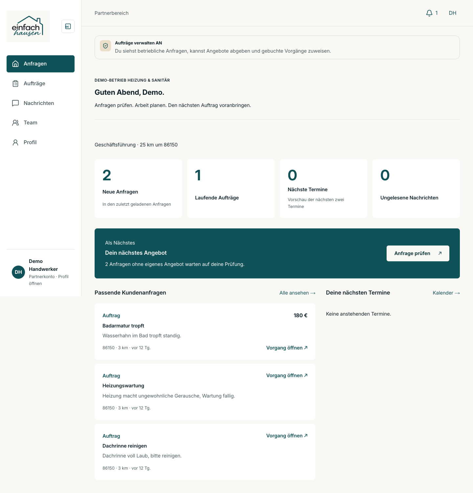
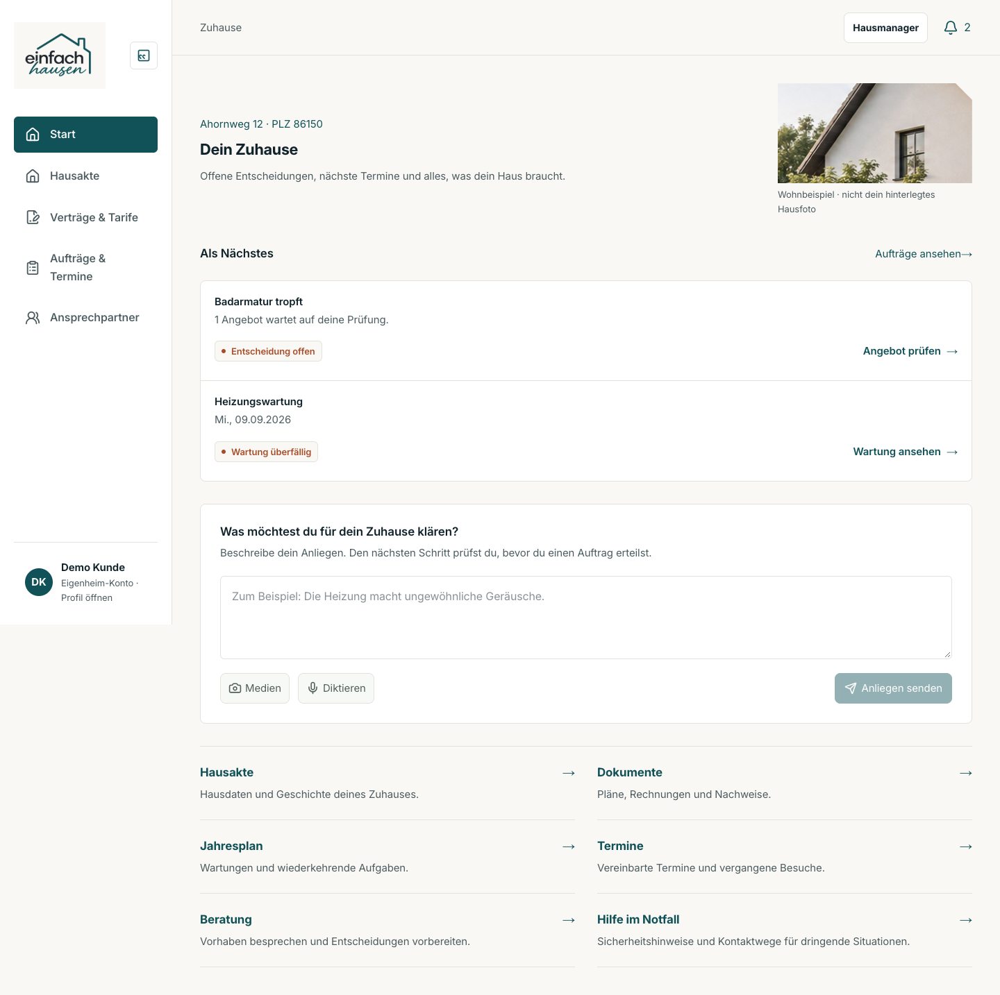
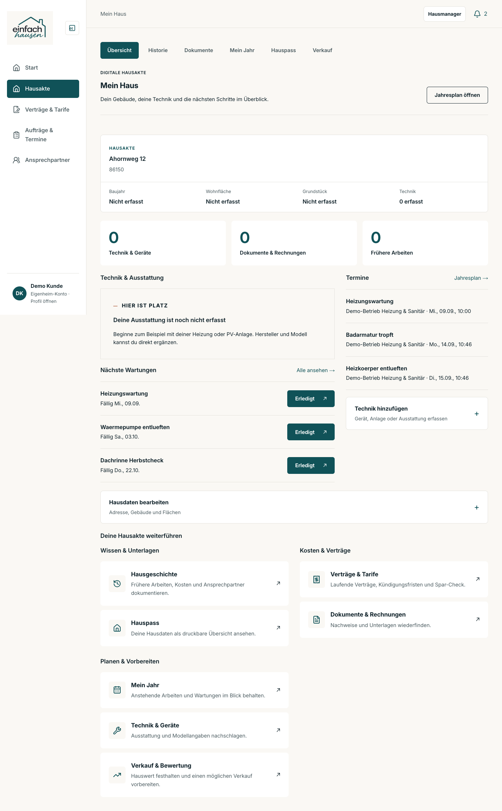

vorher 10 Größen · 6 Gewichte

Vorschlag 7 Größen · 3 Gewichte

Nicht geraten: die Werte unten sind aus den fünf CSS-Dateien der App ausgezählt, die Bilder sind deine echten Seiten mit einer injizierten Skala (kein Mockup, keine Attrappe). Der Arbeitsbaum wurde dafür nicht angefasst.
| Datei | font-size | davon Token | Gewichte |
|---|---|---|---|
src/app/design-system.css | 509 | 0 | 25 |
src/app/globals.css | 342 | 1 | 10 |
packages/eh-design/src/styles.module.css | 272 | 160 | 11 |
src/app/pro/provider-workspace.module.css | 69 | 25 | 7 |
src/app/app/homeowner.module.css | 60 | 24 | 7 |
Das ist der ganze Grund. Kein Geschmacksproblem, sondern 1042 Einzelentscheidungen, die nie zu einer Skala zusammengeführt wurden. Ein Browser-Override kann das nicht reparieren — er hat die Zahl der Größen nur von 12 auf 10 gesenkt. Der Rest steckt in den Komponenten.
| Rolle | Größe | Gewicht | wo |
|---|---|---|---|
| Seitentitel | 22 px | 700 | eine H1 je Seite, benannt nach der Arbeit |
| Sektionsüberschrift | 17 px | 600 | Karten und Abschnitte |
| Kennzahl | 26 px | 700 | Zahlen in Kacheln |
| Fließtext | 15 px | 400 | Standard |
| Metazeile | 13 px | 400 | Datum, Ort, Herkunft |
| Versal-Label | 12 px | 600 | Bereich, Status — gesperrt, sparsam |





tokens.json,
eh-design-generate.mjs, dann eh-design-check.mjs.
Betrifft nur Marketing und eh-design-Bausteine, noch nicht die App-Module./pro mit „Anfragen“
statt mit der Tageszeit.homeowner.module.css und
provider-workspace.module.css: die 129 Deklarationen auf Tokens ziehen.
Hier ist der sichtbare Sprung.HIER IST PLATZ weg, Nullen ersetzen.main ist rot (Architektur-Schritt), und im selben Klon arbeitet gerade eine zweite
Sitzung an error-reporting. Ich würde Schritt 1–2 in einem eigenen Arbeitsbaum
bauen, damit sich nichts vermischt.